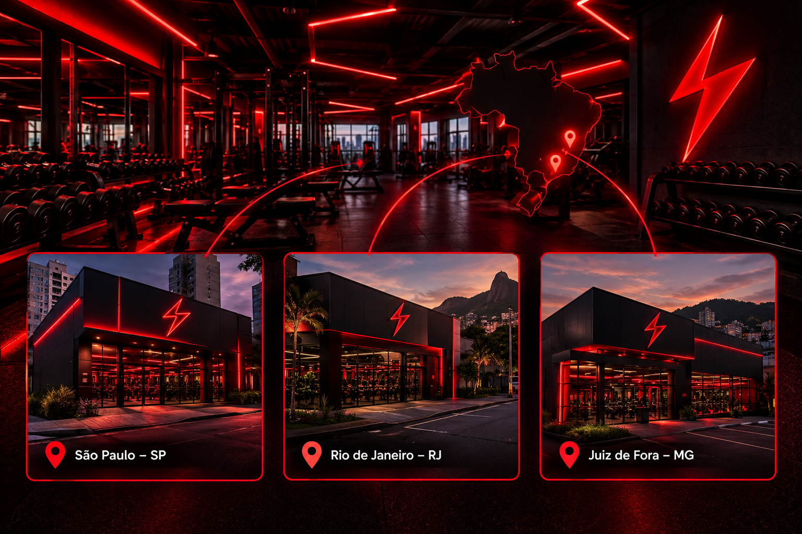

A VOLT FIT é uma academia dedicada à saúde, ao bem-estar e à qualidade de vida. Nosso objetivo é ajudar cada aluno a alcançar seus objetivos por meio de atividades físicas, acompanhamento e incentivo constante.Oferecemos um ambiente moderno, acolhedor e motivador, preparado para pessoas de diferentes níveis de condicionamento físico. Acreditamos que cada evolução importa e que, com dedicação e consistência, todos podem superar seus limites.VOLT FIT — Sua energia, sua evolução!
Quem somos?
Nossas unidades
A VOLT FIT está presente em diferentes regiões, oferecendo estrutura moderna, equipamentos de qualidade e ambientes preparados para transformar sua rotina de treinos. São Paulo — SP - Endereço: Avenida Paulista, 1500 – Bela Vista - Horário: Segunda a sexta, das 6h às 22h; sábados, das 8h às 14h. Rio de Janeiro — RJ - Endereço: Rua das Palmeiras, 245 – Botafogo - Horário: Segunda a sexta, das 6h às 22h; sábados, das 8h às 14h. Juiz de Fora — MG - Endereço: Avenida Fitness, 380 – Centro - Horário: Segunda a sexta, das 6h às 22h; sábados, das 8h às 14h. Cada unidade foi pensada para oferecer conforto, motivação e uma experiência completa de treinamento. VOLT FIT — Sua energia, sua evolução!

Tabela de Planos